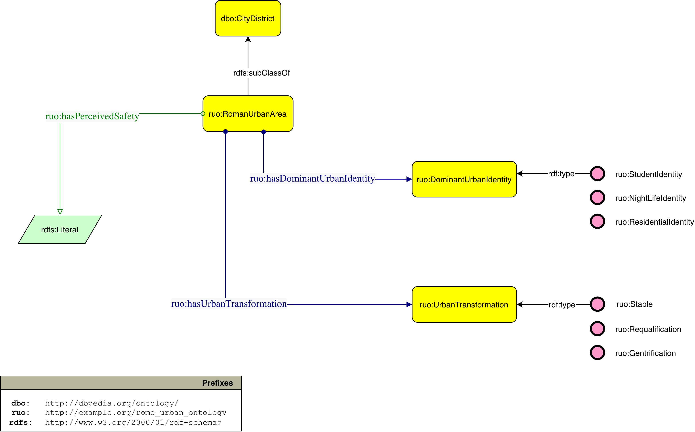

Proposta di arricchimento semantico per la rappresentazione dei quartieri urbani
L'attività di esplorazione del Knowledge Graph, in particolare della modellazione delle entità scelte per il progetto, ha evidenziato come i quartieri romani siano descritti principalmente mediante informazioni dal taglio geografico e amministrativo, mentre risultino assenti caratteristiche capaci di rappresentarne le trasformazioni del tessuto cittadino e l'identità urbana.
Per colmare queste lacune è stata formulata una proposta di estensione dell'ontologia di DBpedia, mantenendo compatibilità con il modello concettuale esistente e introducendo nuove classi e proprietà dedicate alla descrizione semantica delle aree urbane romane.
Clicca sui marker informativi per esplorare gli elementi principali dell'estensione ontologica proposta.

Nuova classe proposta come sottoclasse di dbo:CityDistrict già presente in DBpedia, pensata per rappresentare in modo uniforme rioni, quartieri e zone urbane di Roma.
Classe che descrive l'identità urbana dominante associata ad un'area, ad esempio identità studentesca, residenziale o legata alla vita notturna.
ObjectProperty che collega una ruo:RomanUrbanArea alla classe ruo:DominantUrbanIdentity.
Classe che rappresenta trasformazioni urbane osservabili nei quartieri, come riqualificazione, gentrificazione o stabilità urbana.
ObjectProperty che collega una ruo:RomanUrbanArea alla classe ruo:UrbanTransformation.
DatatypeProperty con range rdfs:Literal, usata per rappresentare una valutazione descrittiva della sicurezza percepita.
L'estensione comincia con l'introduzione della classe ruo:RomanUrbanArea, definita come sottoclasse di dbo:CityDistrict. Questa scelta consente di ridurre l'eterogeneità nella tipizzazione delle risorse corrispondenti ai quartieri romani, preservando allo stesso tempo il collegamento con la modellazione esistente di DBpedia.
A partire dalla nuova classe sono state introdotte tre proprietà dedicate alla descrizione delle caratteristiche identitarie dei quartieri: ruo:hasDominantUrbanIdentity, ruo:hasUrbanTransformation e ruo:hasPerceivedSafety.
Le prime due sono modellate come ObjectProperty, poiché collegano ciascuna istanza di ruo:RomanUrbanArea a nuove classi concettuali. La terza è invece modellata come DatatypeProperty, poiché rappresenta una valutazione qualitativa espressa mediante valore testuale.